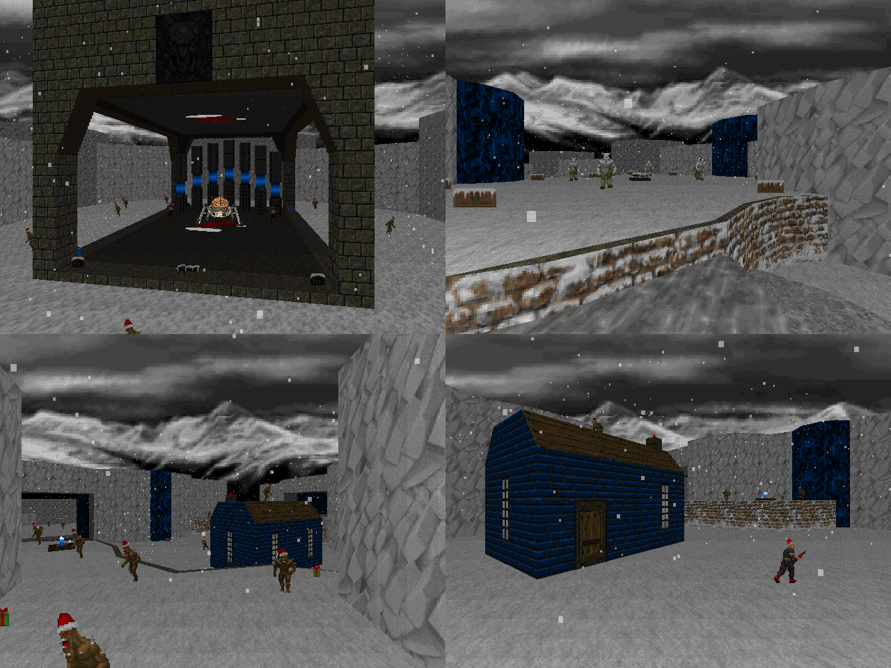

DOWNLOAD LINKS


| Year | 2024 |
| IWAD | Doom II |
| Source port | Boom/UMAPINFO-compatible |
| Game mode(s) | Single-player, coop |
| Map(s) contributed | MAP11 |
Snow Wave is a Christmas-themed megawad that came to life as a community project hosted by Misty.
The adventure herein consists of 21 maps by a host of authors, ranging from fairly relaxed romps to harder
blastfests.
My entry in the project, MAP11, is a map titled "Get Off My Snow-Covered Lawn". In this map, the demons have
invaded Doomguy's property - how they managed it, nobody knows, with the place being so isolated from everything
else that you'd have to fly over the walls to get there. Anyway, gameplay here leans towards the hectic, with
the area being quite open-ended and the resistance constituting a number of mostly low-to-mid-tier enemies. I
speedmapped a rough layout for the map in 30 minutes and finished it up without any time limits other than the
submission deadline. The map also includes (very rudimentary) deathmatch support!